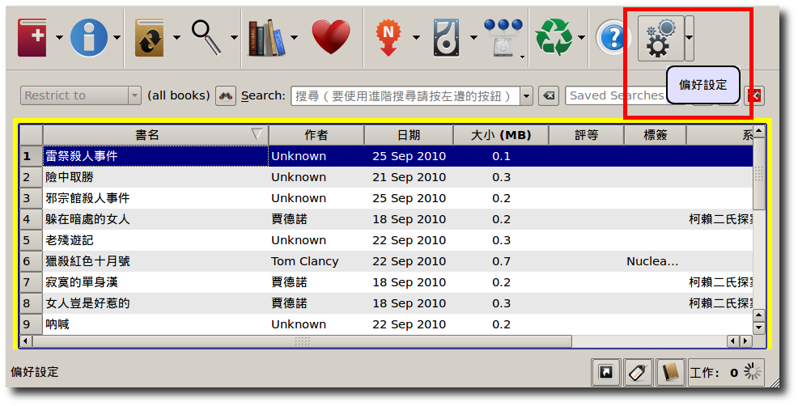
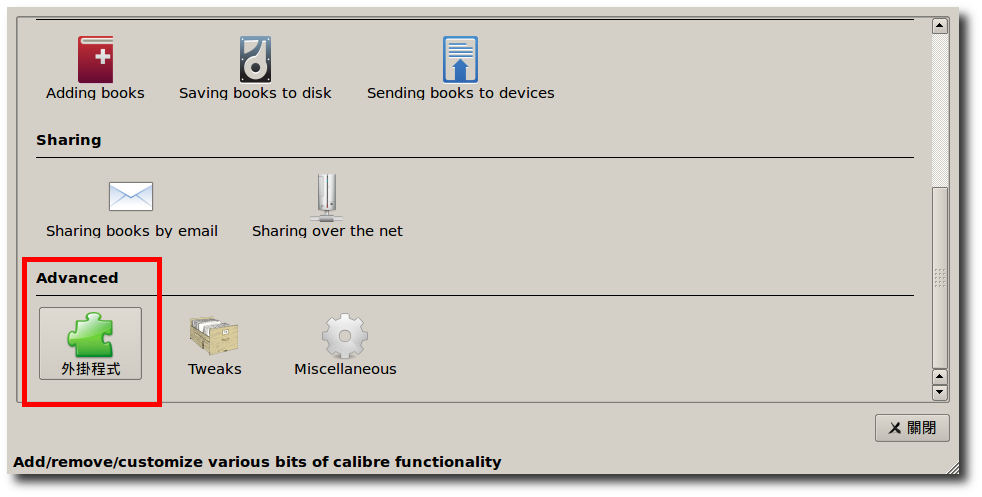
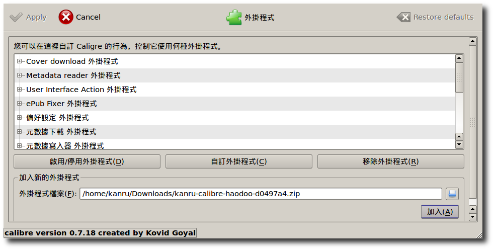
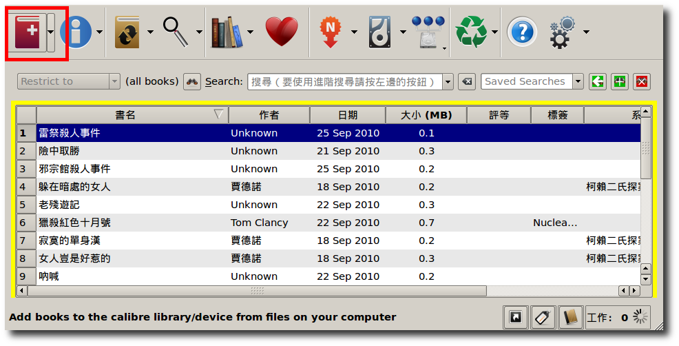
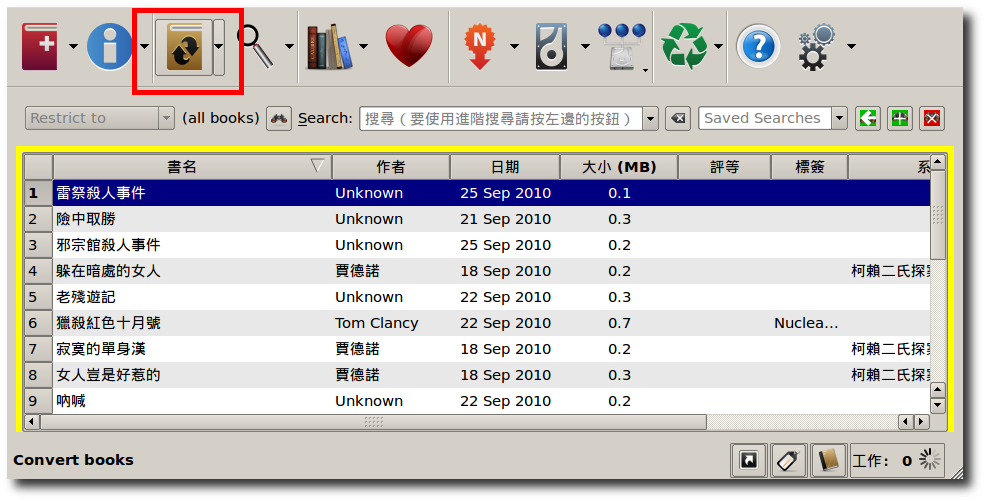
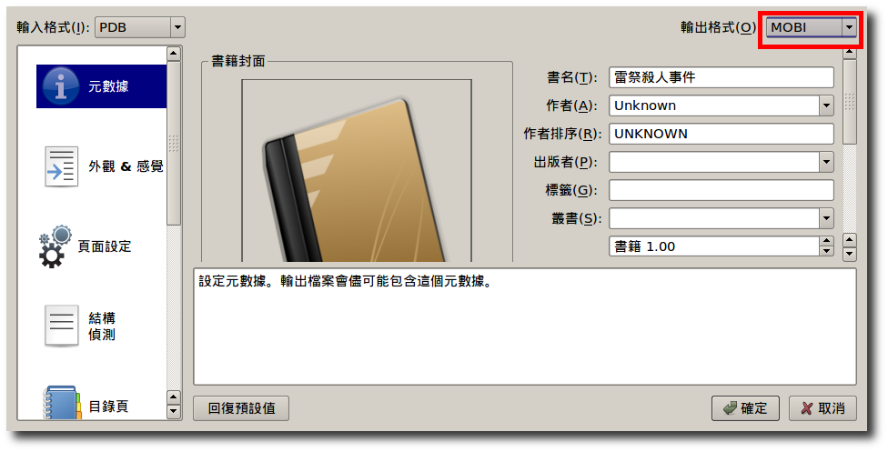

Calibre 是知名的電子書管理軟體，支援各種作業系統，如 Windows, MacOS X, Linux ，可以匯入多種檔案並支援各種輸出格式，包括 EPUB, FB2, OEB, LIT, LRF, MOBI, PDB, PML, RB, PDF, TCR, TXT 等等。
HaoDoo for Calibre 則是一個擴充元件，讓 Calibre 可以認得好讀網站的 PDB/uPDB 內容，原先是為了可以方便的轉換 PDB/uPDB 成 MOBI 格式給 Kindle 使用，但透過 Calibre 更可以支援轉檔到各種其他格式。
目前經過測試，Kindle 3 的原生中文支援可以正常使用，Kindle 3 DXG 裝了中文字型後也可以顯示無誤。
Calibre 0.7.53 版更新後修改了 plugin 的格式規定，使用較舊版本的人可以繼續下載 0.4.2 版的 plugin 使用。
;debugOn ~changeLocale zh-TW.utf8 ;debugOff
從 Calibre 網站 下載安裝。
按 這裡下載 plugin 後，打開 Calibre ，選擇偏好設定 (Preferences)，在進階選項(Advanced) 中選擇外掛程式(Plugins)，加入剛剛下載的 plugin 檔案。






本程式以 GPLv3 授權
Copyright (C) 2010 Kan-Ru Chen This program is free software: you can redistribute it and/or modify it under the terms of the GNU General Public License as published by the Free Software Foundation, either version 3 of the License, or (at your option) any later version. This program is distributed in the hope that it will be useful, but WITHOUT ANY WARRANTY; without even the implied warranty of MERCHANTABILITY or FITNESS FOR A PARTICULAR PURPOSE. See the GNU General Public License for more details. You should have received a copy of the GNU General Public License along with this program. If not, see <http://www.gnu.org/licenses/>.
Kan-Ru Chen (kanru _at_ kanru.info)
You can download this project in either zip or tar formats.
You can also clone the project with Git by running:
$ git clone git://github.com/kanru/calibre-haodooblog comments powered by Disqus